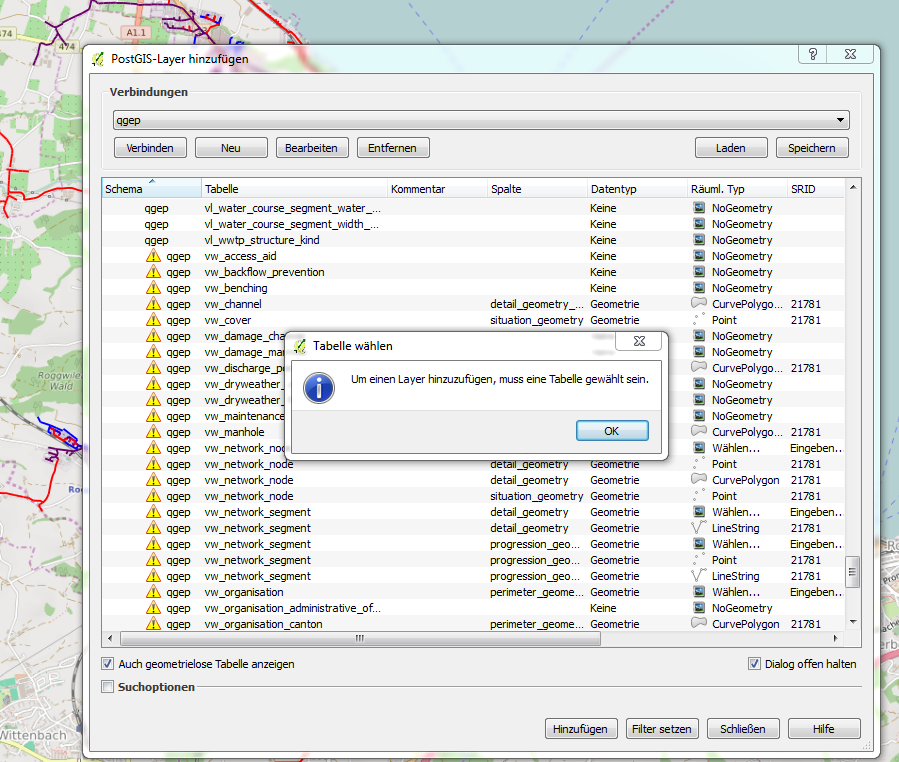
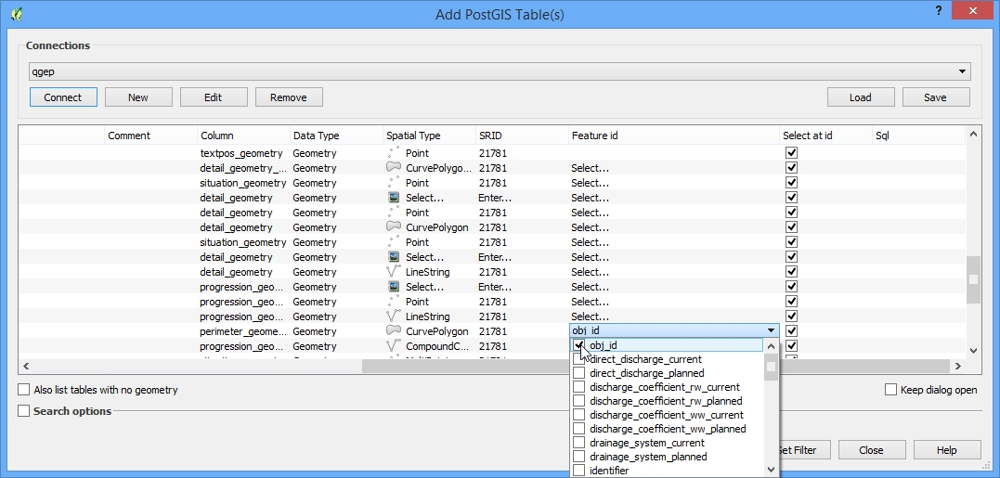

View Layer hinzufügen
Wenn eine View mit dem normalen Add Layer Befehl hinzugefügt wird, wird die folgende Meldung erscheinen

Um das zu vermeiden, muss der View Layer gewählt werden. Dann in der Spalte „feature id“ den Wert „obj_id“ als massgebende ID auswählen (QGIS erkennt dies nicht automatisch).
